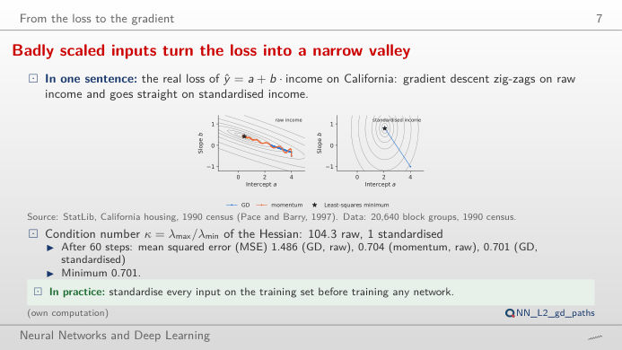
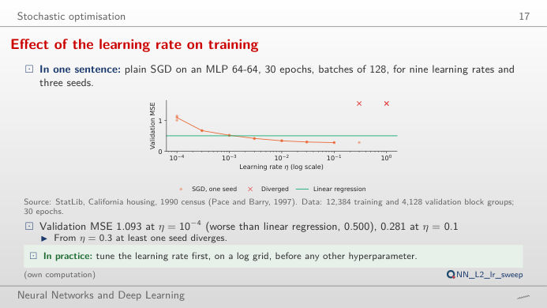
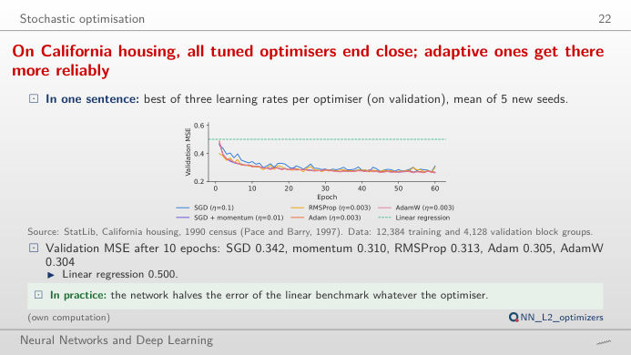
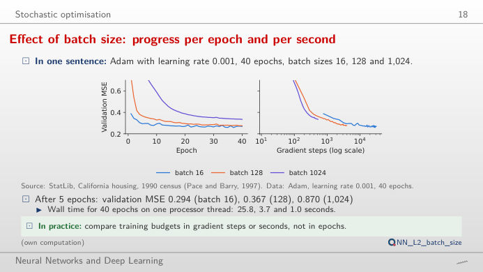
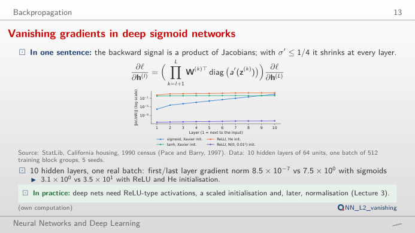

The slide of the lecture is on the left, the same figure on the right, recomputed in your browser from the course data when you move a control. The ▶ button moves the main parameter step by step. Under each figure: a readout, a question for the room and the Quantlet with the code of the chart. The first block runs gradient descent live in your browser on a real regression; the others replay the training runs of the lecture.
Gradient descent and the learning rate · Optimisers and mini-batches · Deep networks: vanishing gradients
Gradient descent and the learning rate
Badly scaled inputs turn the loss into a narrow valley

Answer
The two directions of the valley have curvatures λmax = 38.8 and λmin = 0.37 (condition number 104): a step must stay below 2/λmax to avoid divergence (try 2.05 × 1/λmax), and at that step the flat direction is covered 104 times more slowly. After 60 steps the MSE is still 1.486, against a minimum of 0.701. Momentum (β = 0.9 with half the step) accumulates the consistent part of the gradient and reaches 0.704. Standardising makes the valley round (condition number 1.0): one step of 1/λmax lands on the minimum.
Effect of the learning rate on training

Answer
η = 0.1 gives the lowest validation MSE, 0.281 (the linear regression reaches 0.500). One step higher, η = 0.3, two of the three seeds diverge, and at η = 1 all three do. Too small a rate is slow rather than wrong: at η = 0.0001 the MSE is still 1.005 to 1.142 after 30 epochs. The best rate sits just below the edge of divergence, which is why learning-rate range tests sweep η on a log scale.
Optimisers and mini-batches
On California housing, all tuned optimisers end close; adaptive ones get there more reliably

Answer
Within one optimiser, the learning rate matters more: Adam ends at 0.288 with η = 0.0003 and 0.259 with η = 0.003; SGD ends at 0.307 with η = 0.01 and 0.274 with η = 0.1. At their best rates the five optimisers end close to each other (validation MSE 0.259 to 0.274) and all beat the linear regression (0.500); Adam and AdamW get there faster (0.299 after 10 epochs, against 0.350 for SGD) and with less spread across seeds. On the test set, Adam is not significantly better than SGD (paired t = 1.01, p = 0.37, 5 seeds).
Effect of batch size: progress per epoch and per second

Answer
Per epoch, batch 16 wins (validation MSE 0.294 after 5 epochs, against 0.367 for 128 and 0.870 for 1,024), because it takes 774 steps per epoch instead of 97 or 13. Per gradient step the large batch is at least as good: each of its steps averages more examples. Per second the picture changes again: the 40 epochs took 25.8 s with batch 16, 3.7 s with 128 and 1.0 s with 1,024 on this laptop. With the same learning rate, the large batch has not converged after 40 epochs (0.335); larger batches usually need a larger learning rate.
Deep networks: vanishing gradients
Vanishing gradients in deep sigmoid networks

Answer
About 10⁷ times smaller (8.5 × 10⁻⁷ against 7.5; mean of 5 seeds on one batch of 512 block groups): each sigmoid layer multiplies the backward signal by at most 0.25, so the first layers barely learn. With tanh and Xavier the ratio stays near 0.6, and with ReLU and He initialisation the gradient stays of the same order in every layer. Small weights N(0, 0.01²) shrink the signal in both directions (gradients of 10⁻¹² at depth 10), large weights N(0, 1) make it explode (above 10¹⁶ at depth 10, overflow beyond). Move the depth: the problem grows geometrically with the number of layers.
Data: California housing (StatLib, 1990 census; 20,640 block groups), split 60/20/20 with seed 20261108 as in the lecture (analysis_L2.py): 12,384 training, 4,128 validation and 4,128 test block groups. Networks: multilayer perceptron (MLP) with two hidden layers of 64 ReLU (rectified linear unit) units, mean squared error (MSE) on the median house value in 100,000 USD; SGD = stochastic gradient descent, RMSProp = root mean square propagation, Adam = adaptive moment estimation.